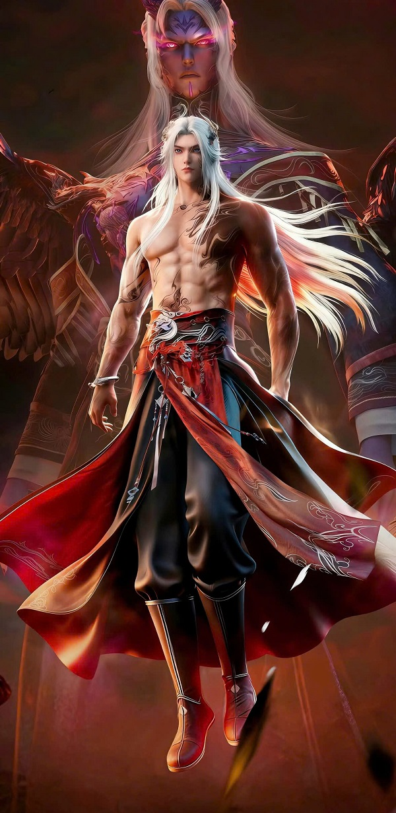
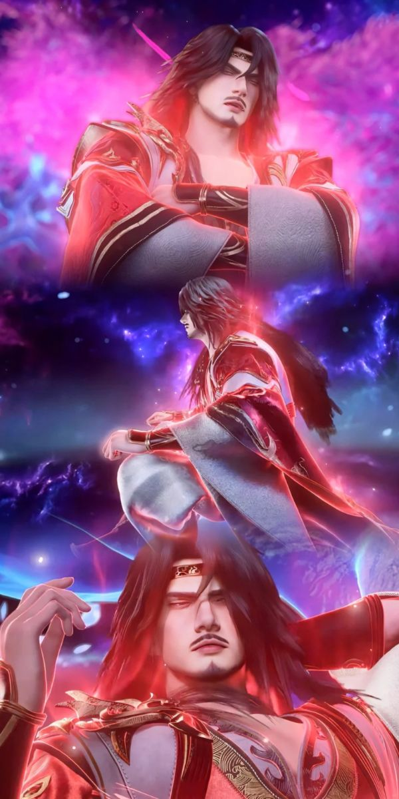
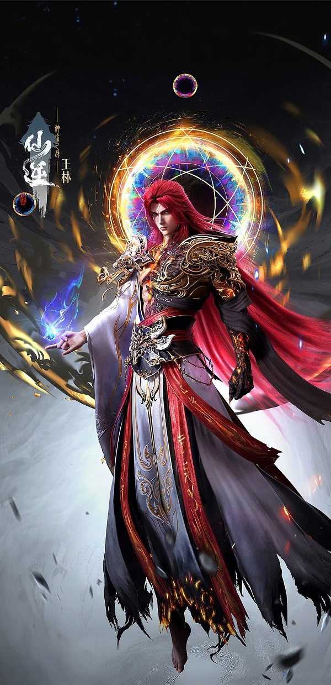
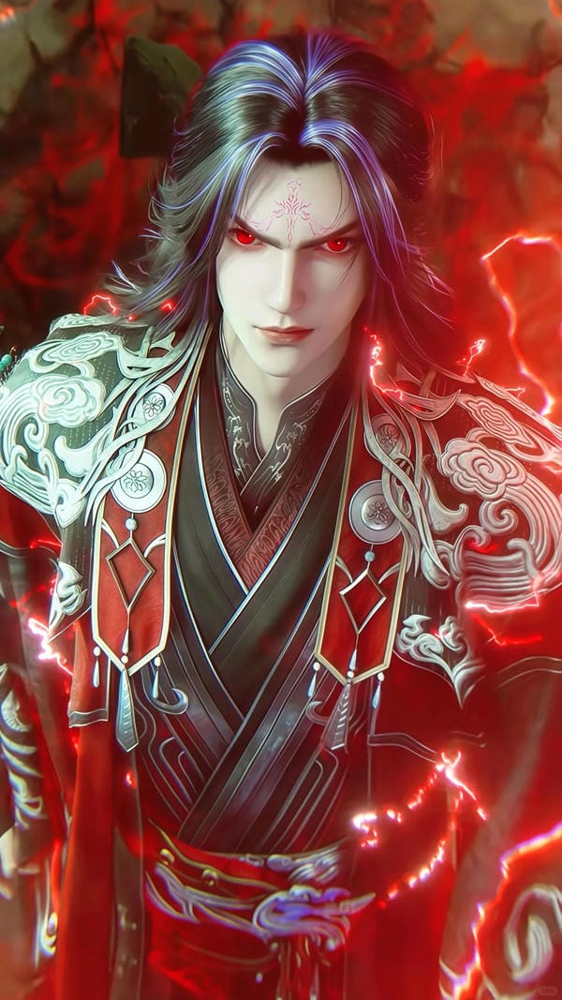

Giới thiệu
Tiên Nghịch (Xian Ni / Renegade Immortal) là một tác phẩm tiên hiệp kinh điển của tác giả Nhĩ Căn. Câu chuyện xoay quanh Vương Lâm, một thiếu niên bình thường nhưng có ý chí tu đạo kiên định. Dù tư chất cực kém, hắn vẫn bước lên con đường tu tiên đầy máu và nước mắt.
Với thông điệp "Đạo tại tâm, không tại thiên", Vương Lâm đã từng bước nghịch thiên, vượt qua sinh tử, chống lại vận mệnh để bảo vệ những người mình yêu thương và tìm ra đại đạo chân chính của riêng mình.
Nhân vật chính

Vương Lâm
Từ một thiếu niên ngây thơ bước vào giới tu chân tàn khốc, hắn trở thành một ma đầu máu lạnh. Trải qua muôn vàn kiếp nạn, hóa phàm hiểu đạo, đạp thiên phong thần.
Lý Mộ Uyển
Hồng nhan tri kỷ cả đời của Vương Lâm. Một nữ tử dịu dàng, am hiểu trận pháp và luyện đan. Nàng nguyện ý chờ đợi hắn ngàn năm, khiến Vương Lâm bất chấp thiên đạo để hồi sinh nàng.
Những Phân Cảnh Đáng Nhớ
Lời từ biệt Tư Đồ Nam
Một trong những khoảnh khắc xúc động nhất khi Tư Đồ Nam - người thầy, người huynh đệ từng đồng hành từ những ngày đầu tiên - cạn kiệt nguyên thần và chìm vào giấc ngủ sâu. Lời hứa "Sau này ta sẽ đến mang ngươi đi" của Vương Lâm là minh chứng cho một tình nghĩa sâu nặng giữa thế giới tu chân vô tình.

Hóa Phàm Ngộ Đạo
Giữa dòng chảy vô tận của thời gian, Vương Lâm từ bỏ thần thông, sống như một người phàm tục. Tại kinh thành, hắn mở một cửa tiệm điêu khắc gỗ, dùng lưỡi dao khắc lại từng gương mặt của cố nhân. Qua bao thăng trầm, chứng kiến sinh lão bệnh tử của phàm nhân, hắn ngộ ra Sinh Tử Ý Cảnh, kết Nguyên Anh thành công.

Nghịch Thiên Cải Mệnh
"Trời để nàng chết, ta sẽ đoạt lại nàng từ tay trời!". Phân cảnh Vương Lâm gầm lên với Thiên Đạo, bất chấp tu vi hao tổn, dùng mọi thủ đoạn chống lại lôi kiếp chỉ để giữ lại một tia hồn phách mỏng manh của Lý Mộ Uyển. Đây chính là ý nghĩa thực sự của hai từ "Tiên Nghịch".

Cảnh giới & Thời gian tu luyện
1. Ngưng Khí Kỳ
Thời gian: ~20 năm đầu.
Vương Lâm với tư chất Ngũ hành tạp linh căn cực kém, nhờ kỳ ngộ nhặt được Thiên Nghịch Châu (hạt châu không gian có linh khí thời gian nghịch thiên) mới có thể kiên trì đạt đến đỉnh phong Ngưng Khí.
2. Trúc Cơ Kỳ
Thời gian: ~50 năm tiếp theo.
Sau khi tông môn bị diệt, hắn phiêu bạt, gia nhập quyết tử cốc. Bắt đầu thấm nhuần quy luật cường giả vi tôn, tu luyện Cực Cảnh Thần Thức và trở nên lạnh lùng tàn nhẫn để sinh tồn.
3. Kết Đan Kỳ
Thời gian: Gần 400 năm tuổi.
Hắn rong ruổi trong Tu Ma Hải (Biển Tu Ma), giết chóc vô số. Quá trình ngưng kết Kim Đan thập phần hung hiểm, hình thành Cực Cảnh Kim Đan hiếm có, chiến lực vượt xa cùng giai.
4. Nguyên Anh Kỳ
Thời gian: Hơn 500 năm tuổi.
Trước khi đột phá, hắn chọn con đường "Hóa Phàm" - sống như một phàm nhân điêu khắc tượng gỗ để cảm ngộ Sinh Tử Ý Cảnh (Sống và Chết). Đây là bước ngoặt quan trọng nhất định hình Đạo của hắn.
5. Hóa Thần Kỳ & Anh Biến
Thời gian: Từ 800 - 1500 năm.
Ngưng tụ Nguyên Thần, đi tìm kiếm phương pháp phục sinh Lý Mộ Uyển. Từ đệ nhất cao thủ ở Chu Tước Tinh, tiến ra tinh không rộng lớn, chiến đấu với vô vàn thế lực ở La Thiên Tinh Vực.
6. Vấn Đỉnh & Bước thứ hai (Toái Niết)
Thời gian: Hàng ngàn năm sau.
Vấn Đỉnh là bước cuối cùng của bước thứ nhất tu đạo. Sau đó hắn đột phá Không Niết, Toái Niết... ngộ ra các loại bản nguyên: Lôi, Hỏa, Nhân Quả, Sinh Tử... trở thành đại năng bá tuyệt vũ trụ.